Zpozornět byste měli především, pokud se potýkáte s odhalenými zubními krčky. V tomto případě je důležité přizpůsobit dentální hygienu, aby nedocházelo k dalšímu poškození zubů, včetně kazů.
Čištění zubů s odhalenými krčky by mělo být důkladné, ale jemné. Ideální je kartáček s měkkými štětinami. Jeho výměna by měla probíhat jednou za 6 – 8 týdnů. A důležitá je i technika čištění – žádné horizontální nebo krouživé pohyby, pouze čištění směrem ven.
Způsob ošetření kazu na krčku
Když už se kaz na zubním krčku objeví, je potřeba ho ošetřit. V první řadě je potřeba rekonturovat dáseň (odstranit měkkou tkáň, a tím odhalit krček) v místě ošetření a zafixovat ji retrakčním vláknem (nejčastěji bavlněné vlákno, které zabrání dásni ve zpětném přilnutí k zubu). Zub se utěsní kofferdamem s krčkovou sponou (kofferdam je latexová blána, která odděluje pracovní prostor od zbylé dutiny ústní).
I když může zákrok na fotografii vypadat náročně, je ve skutečnosti poměrně krátký a bezbolestný. Životnost dokonale vyleštěné fotokompozitní (světlem tuhnoucí) výplně s výbornou estetikou je zaručena na dlouhá léta.
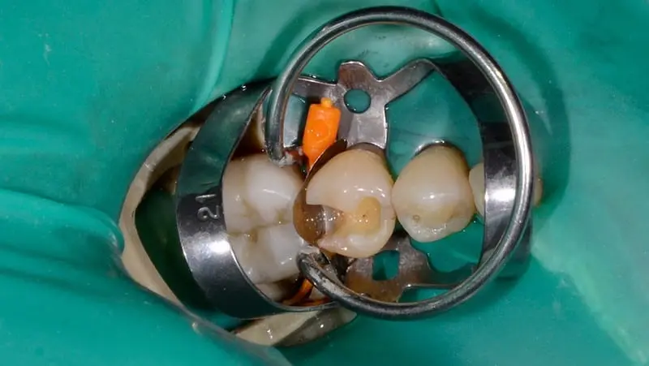
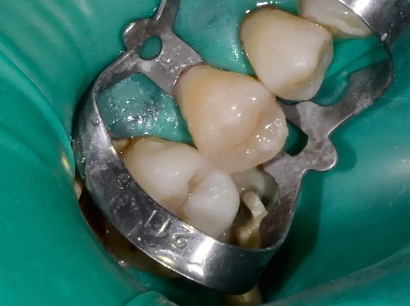
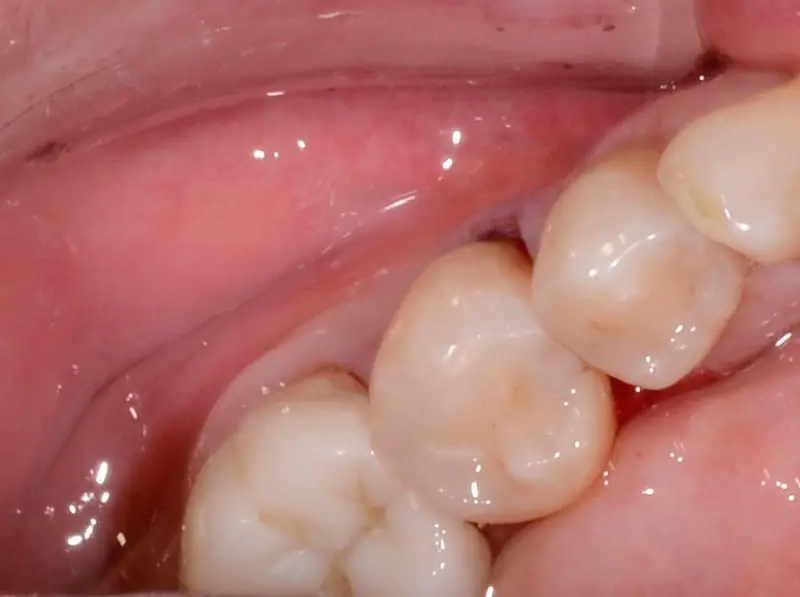
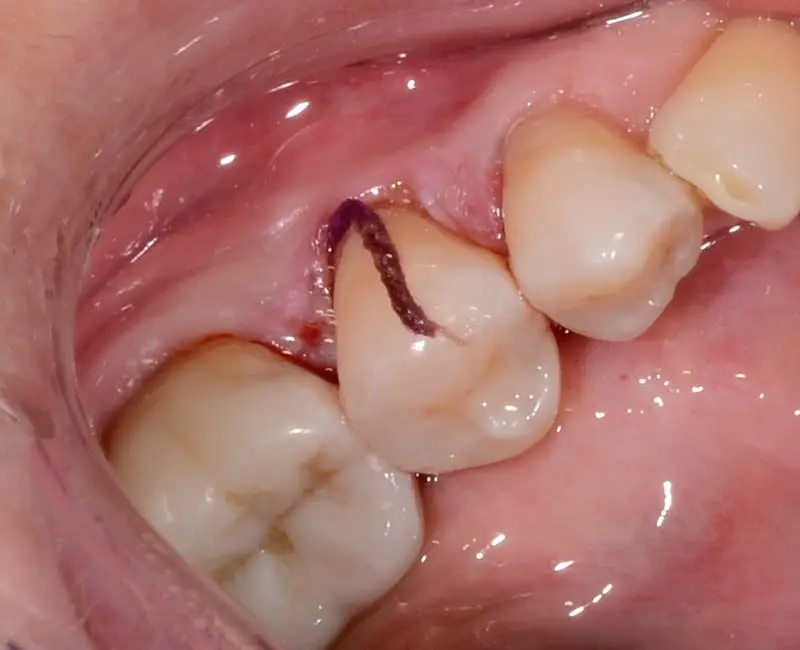
Novější článek →
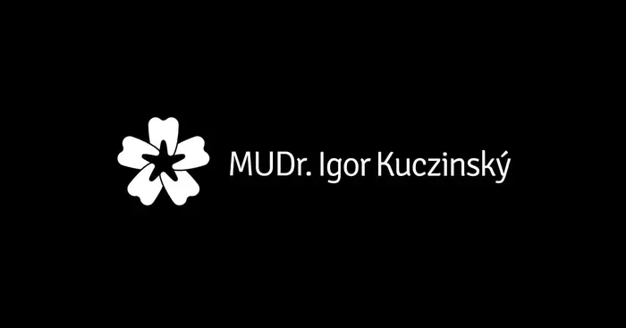
Dentální hygiena u ortodontických pacientů
Nosíte rovnátka? Poradíme vám, jak se o ně a celou dutinu ústní správně starat!
Dentální hygiena u dětí je důležitá. A to každý den
Naučte své děti správné péči o zoubky, ušetříte jim plno nepříjemností u zubaře.
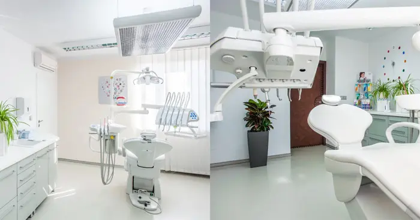
První návštěva dentální hygienistky
Dentální hygienistka vám poradí jak se vyhnout nejen zubním kazům. Ukáže postupy čištění.
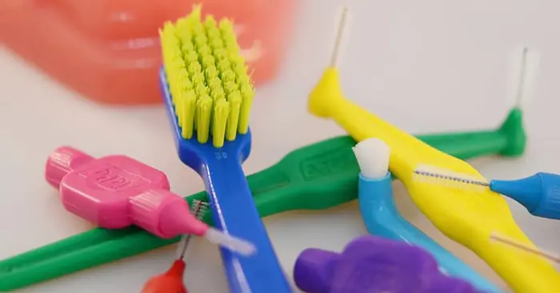
Pomůcky a kartáčky. Mezizubní kartáčky a nitě
Ústní hygiena – to není jen zubní kartáček a pasta. Vyvarujte se zánětu dásní.
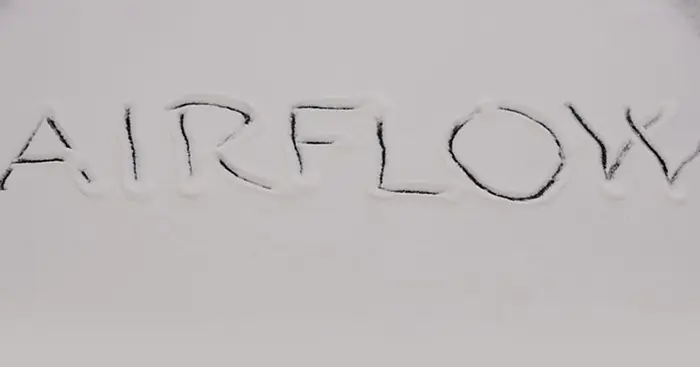
Pískování zubů vás zbaví fleků na zubech
Zbarvila vám oblíbená ranní káva úsměv? Svěřte se do naší péče a znovu zazáříte.
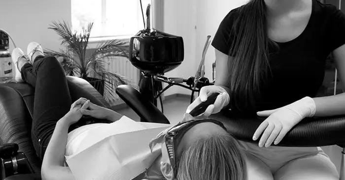
Zubní šperky pro ženy a jejich aplikace
Toužíte po úsměvu filmových hvězd? Zázraky umíme na počkání, nemožné ihned!
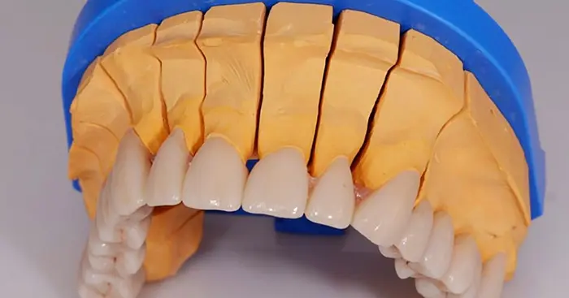
Zubní můstek a jeho renovace – bezkovové práce
Stydíte se za svůj starý nevzhledný zubní můstek? Uděláme vám nový a krásnější.
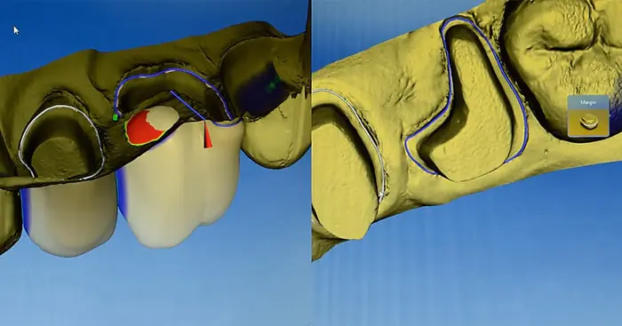
Oprava zubu a částečné extrace zubu
Umíme zachránit funkční zub i přesto, že odumřel jeden z jeho kořenů. Jak? Přečtěte si o tom.
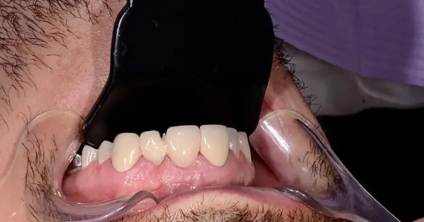
Zubní protetika. Oprava 10 let staré práce
Odlupuje se vám stará zubní náhrada? Snadnou a rychlou opravou ji zachráníme.
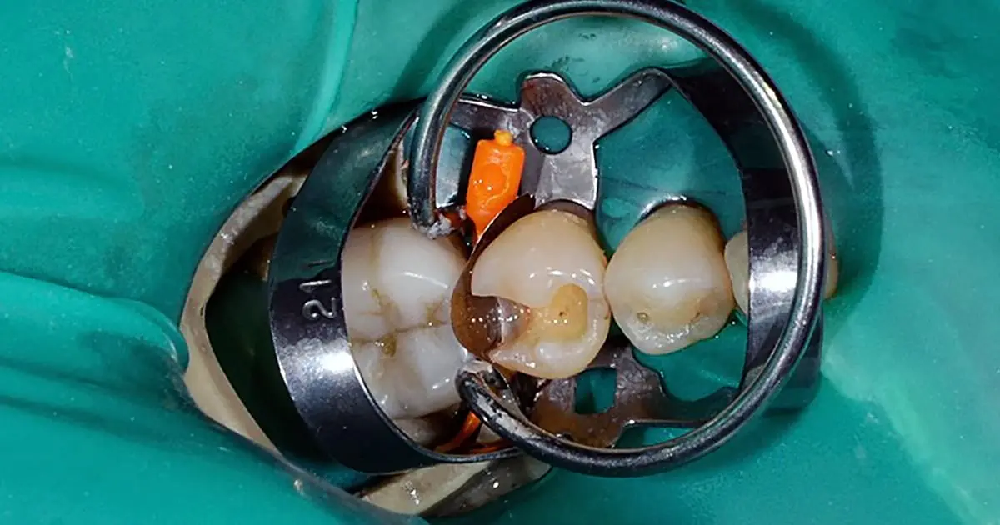
Ošetření kazu na krčku. Rychle bez bolesti.
Zjistěte, jak probíhá ošetření krčkového kazu. Uvidíte, že už se ho nebudete bát.